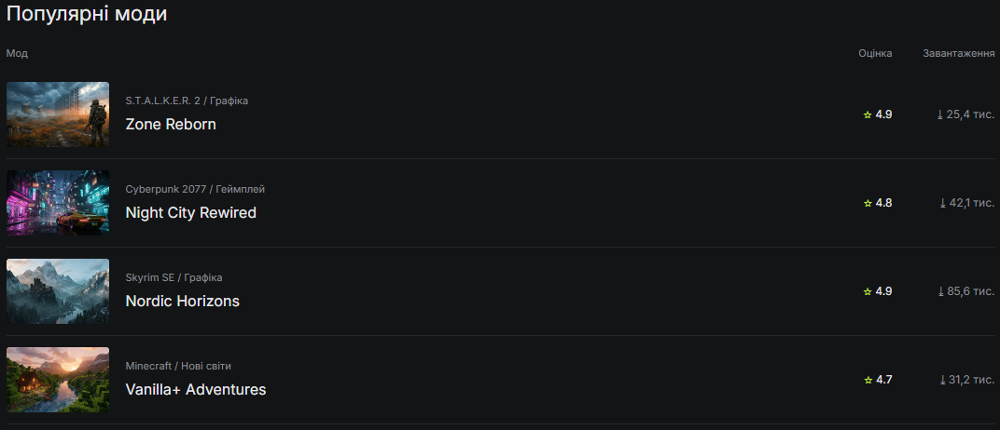
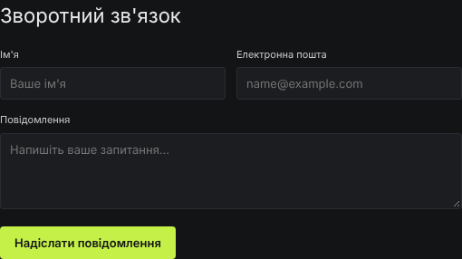
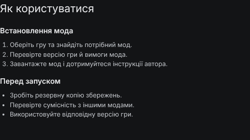
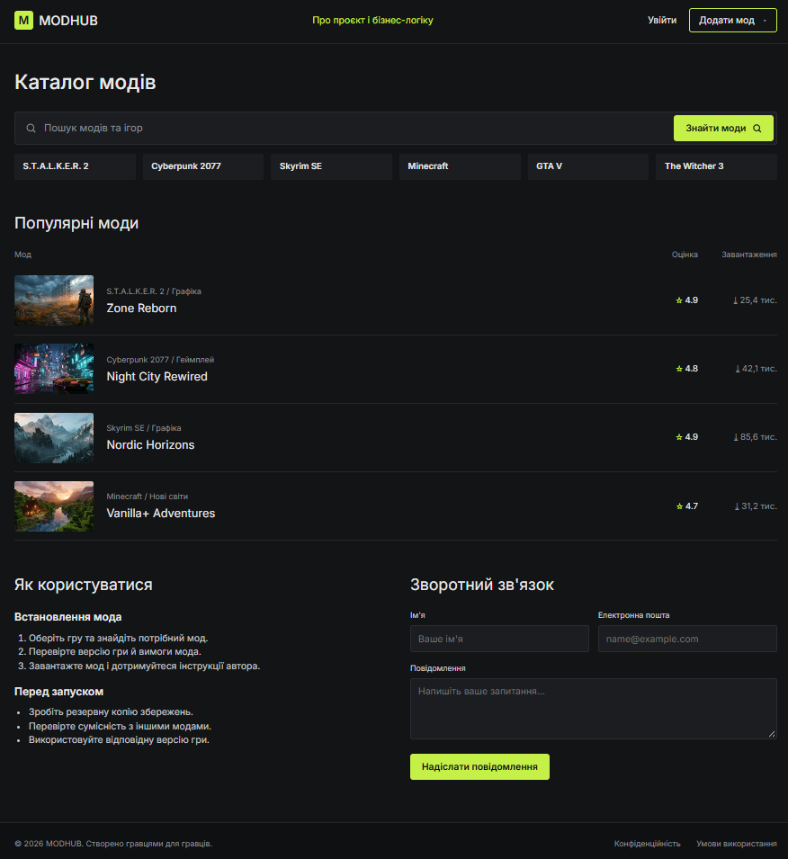

Лабораторна робота №1
Тема
Теги та атрибути HTML-документа. Структурна розмітка. Git. GitHub. Робота з репозиторіями. Опис логіки власного WEB-застосунку.
Мета
Придбати практичні навички роботи з GitHub, репозиторіями, HTML-документом, таблицями, зображеннями, посиланнями, списками, формами. Створити шаблон звітного HTML-документа для відображення результатів роботи всіх лабораторних робіт.
Місце розташування
| WEB-застосунок MODHUB | Репозиторій | github.com/Oleg-StackOverflow/IA-44_appWEB-ZakharovOleh-FIOT-2026 |
|---|---|---|
| Жива сторінка | Oleg-StackOverflow.github.io/IA-44_appWEB-ZakharovOleh-FIOT-2026 | |
| Звітний HTML-документ | Репозиторій | github.com/Oleg-StackOverflow/IA-44_appRECORD-ZakharovOleh-FIOT-2026 |
| Жива сторінка | Oleg-StackOverflow.github.io/IA-44_appRECORD-ZakharovOleh-FIOT-2026 |
Опис предметного середовища
Для лабораторних робіт обрано предметну галузь «Каталог модифікацій для комп'ютерних ігор». WEB-застосунок має назву MODHUB.
Моди — це доповнення, створені гравцями, які змінюють графіку, ігровий процес або наповнення гри. Моди для однієї гри часто розкидані по різних сайтах, і гравцеві складно зрозуміти, чи підійде мод до його версії гри та чи не конфліктуватиме з іншими модами. MODHUB збирає моди в одному каталозі, показує їхню оцінку, кількість завантажень, вимоги та інструкцію з встановлення.
Застосунком користуються три типи користувачів: гравець шукає та завантажує моди, автор публікує власні моди, модератор перевіряє нові моди перед появою в каталозі.
Основні сутності
- Гра — назва та пов'язані з нею модифікації.
- Мод — назва, зображення, категорія, версія, вимоги та автор.
- Користувач — гравець, автор або модератор.
- Оцінка й завантаження — показники популярності мода.
Опис бізнес-логіки
Сценарій «Пошук і вибір мода»
- Гравець обирає гру або вводить пошуковий запит.
- Каталог відбирає моди за назвою та вибраною грою.
- Гравець переглядає оцінку, вимоги та інструкцію автора.
- Після перевірки сумісності гравець переходить до завантаження.
Сценарій «Публікація та перевірка»
- Автор заповнює назву, гру, категорію, опис, версію та вимоги мода.
- Новий мод надходить на перевірку модератору; до схвалення він не відображається в каталозі.
- Після схвалення мод публікується та прив'язується до гри.
- Рейтинг мода формується з оцінок користувачів.
Функціональні вимоги
- Пошук модів за назвою та фільтрація за грою.
- Перегляд списку популярних модів з оцінкою та кількістю завантажень.
- Додавання нового мода автором і перевірка його модератором.
- Вхід користувача в систему.
- Надсилання повідомлення через форму зворотного зв'язку.
Нефункціональні вимоги
- Коректне відображення в сучасних браузерах і на мобільних пристроях.
- Сторінки завантажуються не довше ніж за 2–3 секунди.
- Інтерфейс українською мовою, зрозуміла навігація.
- Перевірка даних у формах перед надсиланням.
Структура головної сторінки WEB-застосунку
Головна сторінка (файл index.html) складається з шапки, основної частини та футера. Основна частина містить пошук, таблицю популярних модів, інструкцію у вигляді списків і форму зворотного зв'язку. Стилі винесені в окремий файл css/style.css.
Загальна структура
<!DOCTYPE html>
<html lang="uk">
<head>
<meta charset="UTF-8">
<title>MODHUB — каталог модів</title>
<link rel="stylesheet" href="css/style.css">
</head>
<body>
<header class="header"> <!-- логотип, посилання, кнопки -->
<a href="index.html" class="logo">...</a>
<nav class="header__nav">...</nav>
</header>
<main class="container">
<section class="catalog"> <!-- h1, форма пошуку, список ігор -->
<section id="popular"> <!-- h2, таблиця модів із зображеннями -->
<div class="bottom">
<section class="howto"> <!-- нумерований і маркований списки -->
<section id="feedback"> <!-- форма зворотного зв'язку -->
</div>
</main>
<footer class="footer">...</footer>
</body>
</html>Посилання
Посилання на сторінку з описом предметної галузі та бізнес-логіки розміщене в шапці. На сторінці about.html є зворотне посилання на каталог.
<nav class="header__nav">
<a href="about.html" class="link-accent">Про проєкт і бізнес-логіку</a>
</nav>
<!-- about.html -->
<a href="index.html" class="link-accent">← До каталогу</a>Використані теги
| Група | Теги |
|---|---|
| Структура документа | <!DOCTYPE>, <html>, <head>, <meta>, <title>, <link>, <body> |
| Семантичні блоки | <header>, <nav>, <main>, <section>, <footer>, <div> |
| Заголовки та текст | <h1>, <h2>, <h3>, <p>, <span> |
| Посилання та зображення | <a>, <img>, <svg> |
| Таблиця | <table>, <thead>, <tbody>, <tr>, <th>, <td> |
| Списки | <ol>, <ul>, <li> |
| Форми | <form>, <label>, <input>, <textarea>, <button> |
HTML-код таблиці
На головній сторінці таблиця використовується для виведення популярних модів: у кожному рядку є зображення, гра й категорія, назва мода, оцінка та кількість завантажень.
<table class="mods-table">
<thead>
<tr>
<th>Мод</th>
<th class="col-num">Оцінка</th>
<th class="col-num">Завантаження</th>
</tr>
</thead>
<tbody>
<tr>
<td>
<div class="mod">
<img src="images/zone-reborn.jpg" alt="Скриншот моду Zone Reborn" width="110" height="70">
<div>
<p class="mod__meta">S.T.A.L.K.E.R. 2 / Графіка</p>
<h3 class="mod__name">Zone Reborn</h3>
</div>
</div>
</td>
<td class="col-num"><span class="star">☆</span> 4.9</td>
<td class="col-num muted">⤓ 25,4 тис.</td>
</tr>
<tr>
<td>
<div class="mod">
<img src="images/night-city.jpg" alt="Скриншот моду Night City Rewired" width="110" height="70">
<div>
<p class="mod__meta">Cyberpunk 2077 / Геймплей</p>
<h3 class="mod__name">Night City Rewired</h3>
</div>
</div>
</td>
<td class="col-num"><span class="star">☆</span> 4.8</td>
<td class="col-num muted">⤓ 42,1 тис.</td>
</tr>
<tr>
<td>
<div class="mod">
<img src="images/nordic-horizons.jpg" alt="Скриншот моду Nordic Horizons" width="110" height="70">
<div>
<p class="mod__meta">Skyrim SE / Графіка</p>
<h3 class="mod__name">Nordic Horizons</h3>
</div>
</div>
</td>
<td class="col-num"><span class="star">☆</span> 4.9</td>
<td class="col-num muted">⤓ 85,6 тис.</td>
</tr>
<tr>
<td>
<div class="mod">
<img src="images/vanilla-adventures.jpg" alt="Скриншот моду Vanilla+ Adventures" width="110" height="70">
<div>
<p class="mod__meta">Minecraft / Нові світи</p>
<h3 class="mod__name">Vanilla+ Adventures</h3>
</div>
</div>
</td>
<td class="col-num"><span class="star">☆</span> 4.7</td>
<td class="col-num muted">⤓ 31,2 тис.</td>
</tr>
</tbody>
</table>Скриншот таблиці

Теорія: теги таблиць
Таблиця в HTML створюється тегом <table>. Таблиця складається з рядків <tr>, а рядки — з комірок <td> або <th>.
| Тег | Призначення |
|---|---|
<table> | Контейнер таблиці. |
<caption> | Підпис (назва) таблиці, розміщується одразу після <table>. |
<thead> | Група рядків заголовка таблиці. |
<tbody> | Основна частина таблиці з даними. |
<tfoot> | Нижня частина таблиці (підсумки). |
<tr> | Рядок таблиці. |
<th> | Комірка-заголовок, за замовчуванням жирна й по центру. |
<td> | Звичайна комірка з даними. |
<colgroup>, <col> | Групування стовпців для задання їм спільного оформлення. |
Атрибути
colspan— об'єднує комірку на кілька стовпців.rowspan— об'єднує комірку на кілька рядків (використано в таблиці посилань у розділі «Тема, мета»).scope— вказує, до чого належить заголовок<th>:rowабоcol.headers— пов'язує комірку із заголовками за їхнімиid.
Атрибути border, cellpadding, cellspacing, align, bgcolor застаріли. Замість них використовують CSS-властивості border, padding, border-collapse, text-align, background-color.
HTML-код зображення
Зображення використовуються в таблиці модів як превʼю кожної модифікації.
<img src="images/zone-reborn.jpg" alt="Скриншот моду Zone Reborn" width="110" height="70">Скриншот зображення

Теорія: тег <img> та його атрибути
Тег <img> вставляє зображення на сторінку. Він одиночний, тобто не має закриваючого тегу. Підтримуються формати JPG, PNG, GIF, SVG, WebP.
| Атрибут | Призначення |
|---|---|
src | Шлях до файлу зображення (обов'язковий). Може бути відносним (images/photo.jpg) або абсолютним (URL). |
alt | Альтернативний текст. Показується, якщо зображення не завантажилось, і зачитується програмами для незрячих. |
width, height | Ширина та висота в пікселях. Браузер резервує місце під картинку, і сторінка не «стрибає» під час завантаження. |
title | Підказка, що з'являється при наведенні курсора. |
loading | lazy — відкладене завантаження, поки зображення не з'явиться в зоні видимості. |
srcset, sizes | Набір зображень різного розміру для різних екранів. |
Для зображення з підписом використовують теги <figure> і <figcaption>, як для скриншотів у цьому звіті.
HTML-код форми
Форма зворотного зв'язку дозволяє користувачу надіслати запитання. Поля «Ім'я» та «Електронна пошта» обов'язкові.
<section id="feedback">
<h2>Зворотний зв'язок</h2>
<form action="#" method="post" class="feedback__form">
<div class="form-row">
<div class="form-group">
<label for="name">Ім'я</label>
<input type="text" id="name" name="name" placeholder="Ваше ім'я" required>
</div>
<div class="form-group">
<label for="email">Електронна пошта</label>
<input type="email" id="email" name="email" placeholder="name@example.com" required>
</div>
</div>
<div class="form-group">
<label for="message">Повідомлення</label>
<textarea id="message" name="message" rows="4" placeholder="Напишіть ваше запитання..."></textarea>
</div>
<button type="submit" class="btn-accent">Надіслати повідомлення</button>
</form>
</section>Скриншот форми

Теорія: теги та атрибути форм
| Тег / атрибут | Призначення |
|---|---|
<form> | Контейнер форми. Атрибут action — адреса обробника, method — спосіб передачі (get або post). |
<label> | Підпис поля. Атрибут for пов'язує його з id поля. |
<input> | Поле введення. Тип задається атрибутом type: text, email, password, number, checkbox, radio тощо. |
<textarea> | Багаторядкове текстове поле, висота задається атрибутом rows. |
<select>, <option> | Випадаючий список. |
<button> | Кнопка. type="submit" надсилає форму. |
<fieldset>, <legend> | Групування полів форми з заголовком. |
name | Ім'я поля, під яким значення передається на сервер. |
placeholder | Підказка всередині порожнього поля. |
required | Поле обов'язкове: без нього форма не надішлеться. |
HTML-код списків
У розділі «Як користуватися» нумерований список описує послідовні кроки встановлення мода, а маркований — поради, порядок яких не важливий.
<section class="howto">
<h2>Як користуватися</h2>
<h3>Встановлення мода</h3>
<ol>
<li>Оберіть гру та знайдіть потрібний мод.</li>
<li>Перевірте версію гри й вимоги мода.</li>
<li>Завантажте мод і дотримуйтеся інструкції автора.</li>
</ol>
<h3>Перед запуском</h3>
<ul>
<li>Зробіть резервну копію збережень.</li>
<li>Перевірте сумісність з іншими модами:
<ul>
<li>порядок завантаження модів;</li>
<li>чи не змінюють моди одні й ті самі файли.</li>
</ul>
</li>
<li>Використовуйте відповідну версію гри.</li>
</ul>
</section>Скриншот списків

Теорія: теги та атрибути списків
| Тег | Призначення |
|---|---|
<ol> | Нумерований (впорядкований) список. |
<ul> | Маркований (невпорядкований) список. |
<li> | Елемент списку, використовується всередині <ol> і <ul>. |
<dl>, <dt>, <dd> | Список визначень: термін і його опис. |
Атрибути
typeдля<ol>— вид нумерації:1,A,a,I,i.start— число, з якого починається нумерація.reversed— нумерація у зворотному порядку.valueдля<li>— номер конкретного елемента.
Вид маркера в <ul> змінюють через CSS-властивість list-style-type (disc, circle, square, none). Списки можна вкладати один в одний.
Головна сторінка WEB-застосунку
Жива сторінка: USERNAME.github.io/IS-4X_appWEB-PrizvyshcheImia-FIOT-2026

Код головної сторінки WEB-застосунку
Файл index.html:
<!DOCTYPE html>
<html lang="uk">
<head>
<meta charset="UTF-8">
<meta name="viewport" content="width=device-width, initial-scale=1.0">
<title>MODHUB — каталог модів</title>
<link rel="preconnect" href="https://fonts.googleapis.com">
<link href="https://fonts.googleapis.com/css2?family=Inter:wght@400;500;600&display=swap" rel="stylesheet">
<link rel="stylesheet" href="css/style.css">
</head>
<body>
<!-- Шапка сайту -->
<header class="header">
<div class="container header__inner">
<a href="index.html" class="logo">
<span class="logo__icon">M</span>
<span class="logo__text">MODHUB</span>
</a>
<nav class="header__nav">
<a href="about.html" class="link-accent">Про проєкт і бізнес-логіку</a>
</nav>
<div class="header__actions">
<a href="#" class="header__login">Увійти</a>
<a href="#" class="btn-outline">Додати мод <span class="arrow-down">▾</span></a>
</div>
</div>
</header>
<main class="container">
<!-- Пошук -->
<section class="catalog">
<h1>Каталог модів</h1>
<form class="search" action="#" method="get">
<svg class="search__icon" width="16" height="16" viewBox="0 0 24 24" fill="none" stroke="currentColor" stroke-width="2">
<circle cx="11" cy="11" r="7"></circle>
<line x1="16.5" y1="16.5" x2="21" y2="21"></line>
</svg>
<input type="text" name="q" placeholder="Пошук модів та ігор" class="search__input">
<button type="submit" class="btn-accent">
Знайти моди
<svg width="14" height="14" viewBox="0 0 24 24" fill="none" stroke="currentColor" stroke-width="2.5">
<circle cx="11" cy="11" r="7"></circle>
<line x1="16.5" y1="16.5" x2="21" y2="21"></line>
</svg>
</button>
</form>
<ul class="games">
<li><a href="#">S.T.A.L.K.E.R. 2</a></li>
<li><a href="#">Cyberpunk 2077</a></li>
<li><a href="#">Skyrim SE</a></li>
<li><a href="#">Minecraft</a></li>
<li><a href="#">GTA V</a></li>
<li><a href="#">The Witcher 3</a></li>
</ul>
</section>
<!-- Таблиця популярних модів -->
<section id="popular">
<h2>Популярні моди</h2>
<table class="mods-table">
<thead>
<tr>
<th>Мод</th>
<th class="col-num">Оцінка</th>
<th class="col-num">Завантаження</th>
</tr>
</thead>
<tbody>
<tr>
<td>
<div class="mod">
<img src="images/zone-reborn.jpg" alt="Скриншот моду Zone Reborn" width="110" height="70">
<div>
<p class="mod__meta">S.T.A.L.K.E.R. 2 / Графіка</p>
<h3 class="mod__name">Zone Reborn</h3>
</div>
</div>
</td>
<td class="col-num"><span class="star">☆</span> 4.9</td>
<td class="col-num muted">⤓ 25,4 тис.</td>
</tr>
<tr>
<td>
<div class="mod">
<img src="images/night-city.jpg" alt="Скриншот моду Night City Rewired" width="110" height="70">
<div>
<p class="mod__meta">Cyberpunk 2077 / Геймплей</p>
<h3 class="mod__name">Night City Rewired</h3>
</div>
</div>
</td>
<td class="col-num"><span class="star">☆</span> 4.8</td>
<td class="col-num muted">⤓ 42,1 тис.</td>
</tr>
<tr>
<td>
<div class="mod">
<img src="images/nordic-horizons.jpg" alt="Скриншот моду Nordic Horizons" width="110" height="70">
<div>
<p class="mod__meta">Skyrim SE / Графіка</p>
<h3 class="mod__name">Nordic Horizons</h3>
</div>
</div>
</td>
<td class="col-num"><span class="star">☆</span> 4.9</td>
<td class="col-num muted">⤓ 85,6 тис.</td>
</tr>
<tr>
<td>
<div class="mod">
<img src="images/vanilla-adventures.jpg" alt="Скриншот моду Vanilla+ Adventures" width="110" height="70">
<div>
<p class="mod__meta">Minecraft / Нові світи</p>
<h3 class="mod__name">Vanilla+ Adventures</h3>
</div>
</div>
</td>
<td class="col-num"><span class="star">☆</span> 4.7</td>
<td class="col-num muted">⤓ 31,2 тис.</td>
</tr>
</tbody>
</table>
</section>
<div class="bottom">
<!-- Інструкція (списки) -->
<section class="howto">
<h2>Як користуватися</h2>
<h3>Встановлення мода</h3>
<ol>
<li>Оберіть гру та знайдіть потрібний мод.</li>
<li>Перевірте версію гри й вимоги мода.</li>
<li>Завантажте мод і дотримуйтеся інструкції автора.</li>
</ol>
<h3>Перед запуском</h3>
<ul>
<li>Зробіть резервну копію збережень.</li>
<li>Перевірте сумісність з іншими модами:
<ul>
<li>порядок завантаження модів;</li>
<li>чи не змінюють моди одні й ті самі файли.</li>
</ul>
</li>
<li>Використовуйте відповідну версію гри.</li>
</ul>
</section>
<!-- Форма зворотного зв'язку -->
<section id="feedback">
<h2>Зворотний зв'язок</h2>
<form action="#" method="post" class="feedback__form">
<div class="form-row">
<div class="form-group">
<label for="name">Ім'я</label>
<input type="text" id="name" name="name" placeholder="Ваше ім'я" required>
</div>
<div class="form-group">
<label for="email">Електронна пошта</label>
<input type="email" id="email" name="email" placeholder="name@example.com" required>
</div>
</div>
<div class="form-group">
<label for="message">Повідомлення</label>
<textarea id="message" name="message" rows="4" placeholder="Напишіть ваше запитання..."></textarea>
</div>
<button type="submit" class="btn-accent">Надіслати повідомлення</button>
</form>
</section>
</div>
</main>
<footer class="footer">
<div class="container footer__inner">
<p>© 2026 MODHUB. Створено гравцями для гравців.</p>
<div class="footer__links">
<a href="#">Конфіденційність</a>
<a href="#">Умови використання</a>
<a href="https://github.com/" target="_blank">GitHub</a>
</div>
</div>
</footer>
</body>
</html>Висновки
У ході лабораторної роботи було обрано предметну галузь «Каталог модифікацій для комп'ютерних ігор», описано предметне середовище, бізнес-логіку у вигляді сценаріїв, функціональні та нефункціональні вимоги до WEB-застосунку MODHUB.
У Figma створено макет двох сторінок застосунку. Встановлено Git і GitHub Desktop, створено три репозиторії: для WEB-застосунку, для самостійних робіт і для звітного документа. Для кожного налаштовано GitHub Pages і отримано посилання на живу сторінку.
За макетом зверстано головну сторінку застосунку з використанням заголовків різних рівнів, зображень, таблиці, нумерованих і маркованих списків, форми та посилання на сторінку з описом бізнес-логіки. Також створено шаблон звітного HTML-документа, який буде використовуватись для всіх наступних лабораторних робіт.
Під час роботи отримано практичні навички роботи з репозиторіями та структурною розміткою HTML-документа.